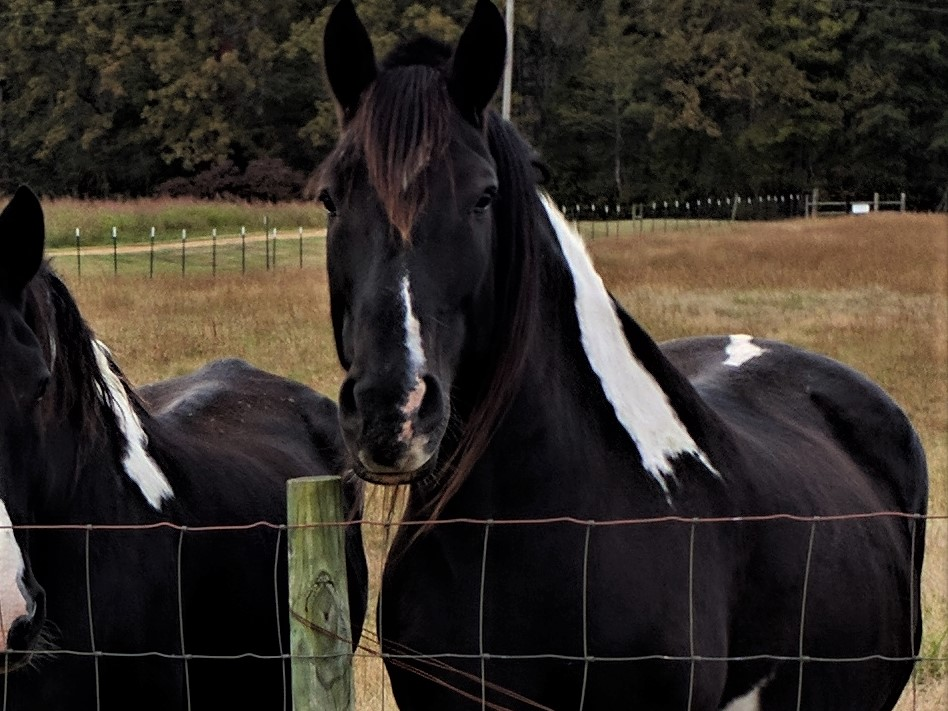
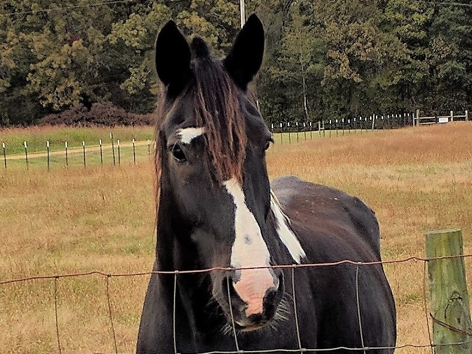
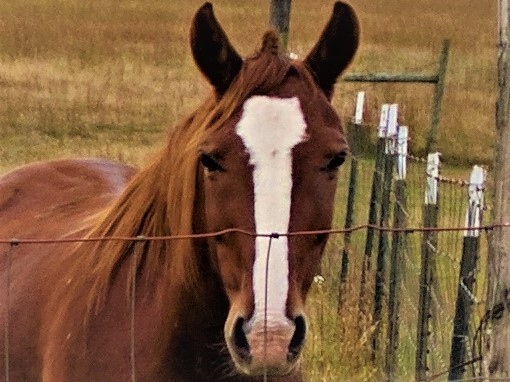
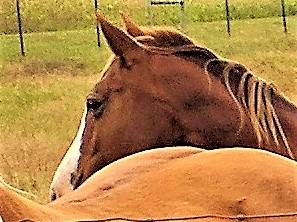
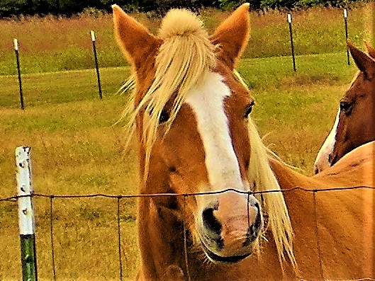

Mac
is a draft horse he weighs about one ton he can pull a cart along with his brother. Mac has a black tail, his brother has a white tail

Allen
like mac Allen is a active horse he can be driven not rode and he has a white tail

Star
Star is a haflinger horse and is ridable along with his brother Ace. He is 17 and can live up to 40 years

Ace
Ace is a haflinger and is ridable along with his brother star. 17 and can live up to 40 years

Princess
A young quarter horse her and her brother are not broke and they are still tame but they have to be broke and is 10 years of age.

Thunder
A young quarter horse and along with his sister they have lived a healthy life of ten years.